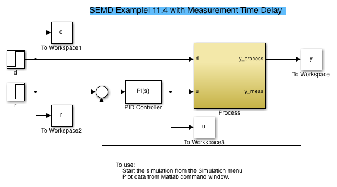
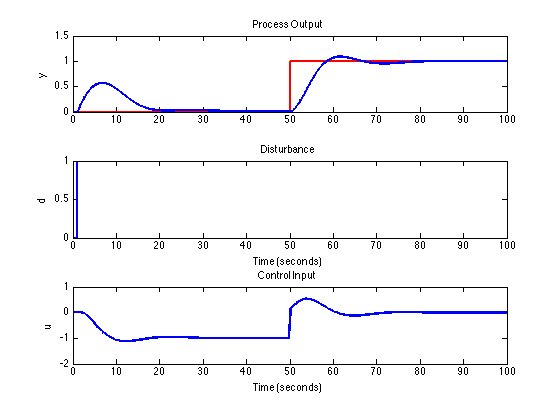

Simulation of a PID Control Loop in Simulink
File: Ch12_PID_Simulink.m
Contents
Simulink Model
Ch12_PID_Simulink_Model
Running the Simulink Model from a Script
sim('Ch12_PID_Simulink_Model')
Display Results
LW = 'LineWidth'; lw = 2; subplot(311); plot(r,'r',LW,lw); hold on plot(y,LW,lw) hold off title('Process Output') ylabel('y'); subplot(312); plot(d,LW,lw) title('Disturbance') ylabel('d'); subplot(313); plot(u,LW,lw); title('Control Input'); ylabel('u')
Exercises
- Open the PID Controller block and adjust the parameters. Find controller parameters to reduce the impact of disturbance changes.
- Modify the process model to include a +10% measurement error. That is, the measured process output is 110% of the actual process output. What is the effect on disturbance rejection and setpoint tracking?